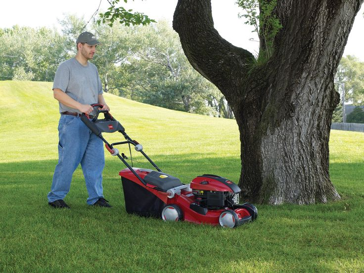
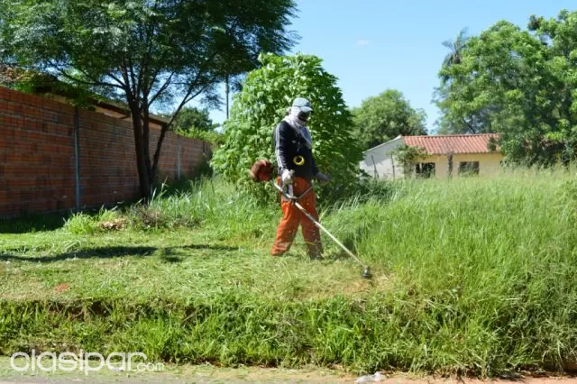

Cortadora de Grama
Cortadora de Grama
En Jardineria Hernandez, sabemos lo importante que es para ti tener un área bien cuidada, ya sea en tu hogar o en tu empresa. Por eso, ofrecemos un servicio de mantenimiento de áreas verdes completo y personalizado, para que tus espacios verdes siempre luzca hermosos y saludables.

Diseño de Arbusto
Diseño de Arbusto
En HR, sabemos lo importante que es para ti tener un área bien cuidada, ya sea en tu hogar o en tu empresa. Por eso, ofrecemos un servicio de mantenimiento de áreas verdes completo y personalizado, para que tus espacios verdes siempre luzca hermosos y saludables.

Desbroce de jardines
Desbroce de jardines
Cuando pasamos mucho tiempo sin limpiar un terreno, lo habitual es que aparezca mucha maleza. Desbrozar es limpiar un jardín, finca o cualquier tipo de terreno, eliminando todas aquellas plantas y maleza que no queremos que crezca allí.